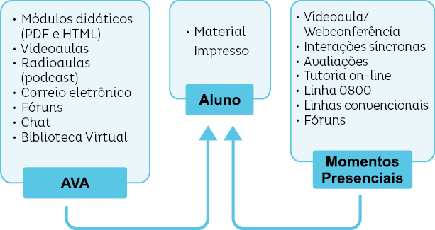
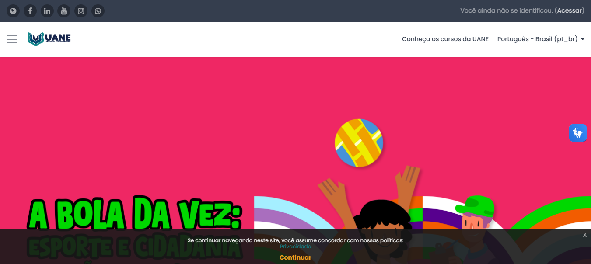

Introdução
Este fascículo é dedicado a apresentar aspectos relacionados ao curso técnico em Secretaria Escolar oferecido na modalidade a distância pela Universidade Aberta do Nordeste da Fundação Demócrito Rocha.
A Universidade Aberta do Nordeste (Uane) surgiu na década de 1980, quando a Universidade de Brasília (UnB) estabeleceu convênio com a Open University de Londres e disseminou a experiência de educação a distância (EaD) em âmbito nacional. A Fundação Demócrito Rocha (FDR), instituição de direito privado sem fins lucrativos, criada por iniciativa da Empresa Jornalística O POVO, assumiu o programa no Ceará, processou um conjunto de adaptações ao modelo importado, visando adequá-lo à realidade local.
A Uane trabalha com as metodologias de educação a distância originalmente desenvolvidas pela Open University de Londres e pela Universidade Nacional de Educação a Distância da Espanha. No entanto, a concepção inicial dessas metodologias sofreu adaptações compatíveis com as exigências dos meios de comunicação envolvidos – jornal e rádio –, às tecnologias disponíveis e às peculiaridades específicas da região Nordeste.
Hoje, os cursos da Uane incorporam variados suportes e tecnologias, fascículos, e-books, lives, videoaulas, radioaulas, vídeos e webconferências e um conjunto amplo de ferramentas síncronas e assíncronas disponíveis em Ambiente Virtual de Aprendizagem, o Moodle.
A seguir, veremos alguns aspectos que caracterizam a EaD no Brasil.
1. Educação a Distância no Brasil
A história da EaD no Brasil é cheia de percalços e interrupções. Desde as primeiras décadas do século XX, algumas experiências foram desenvolvidas, como o uso de material didático e rádio, tecnologias disponíveis à época.
No entanto, o processo de normatização da EaD no Brasil só aconteceu com a publicação da Lei de Diretrizes e Bases (LDB), de 1996 (nº 9.394/96), que no seu artigo 80 afirma: "O Poder Público incentivará o desenvolvimento e a vinculação de programas de ensino a distância, em todos os níveis e modalidades de ensino, e de educação continuada".
Tal reconhecimento, apesar das críticas declaradas pelo uso do termo "ensino a distância" ao invés de "educação à distância", por autores como Demo (1998)1, representou um avanço significativo para as iniciativas que já estavam em andamento nesse sentido e estimulou adoção mais frequente dessa modalidade.
Após legitimado e regulamentado pelo Decreto nº 2.494/98, em Art. 1º, a "educação a distância" passa a ter uma definição oficial:
A Educação a distância é uma forma de ensino que possibilita a autoaprendizagem, com a mediação de recursos didáticos sistematicamente organizados, apresentados em diferentes suportes de informação, utilizados isoladamente ou combinados, e veiculados pelos diversos meios de comunicação.
O Decreto nº 2.561/98 e a Portaria Ministerial nº 301/98 alteram os artigos 11 e 12 do Decreto nº 2.494/98 e normatizam os procedimentos de credenciamento das instituições interessadas em oferecer cursos a distância em níveis de graduação e educação profissional tecnológica.
Este período pós-LDB foi marcado por experiências diversas com a introdução, não só dos recursos pedagógicos já disponíveis – material didático, videoaulas, tutoria e professor conteudista –, mas pela inclusão de tecnologias digitais capazes de criar ambientes virtuais de aprendizagem com interação síncrona e assíncrona; o desenvolvimento de metodologias próprias para formatar e imprimir material didático; a criação de estrutura técnica e de recursos humanos para apoio a atividades de multimídia e a concepção de uma logística para oferta de curso EaD em escala nacional.
Também foram criadas estratégias para gestão administrativa e pedagógica visando atender alunos on-line por meio de centrais remotas de monitoria e tutoria. Foram organizadas e preparadas equipes e desenvolvidas tecnologias para lançar os primeiros cursos on-line do país.
No ano de 2007 foi aprovada e sancionada a Lei n° 11.502, que indica para o ensino público o uso conjugado do ensino presencial e a distância em cursos para a formação inicial de profissionais do magistério, e, neste caso, a educação a distância é apontada como modalidade preferencial para a formação continuada de professores.
De 1994 a 2013 a história da EaD no Brasil registrou avanços significativos e de forma acelerada, chegando a compensar o lento ritmo com que caminhou na segunda metade do século XX, em relação a outros países que naquela época criavam seus sistemas de EaD.
Importante destacar que nesse período o país conseguiu estabelecer a base legal que orienta esta modalidade de ensino, criou mecanismos para a certificação de instituições que trabalham com educação a distância, analisou propostas e emitiu autorização de cursos, estimulou o desenvolvimento de pesquisas que vieram a produzir modelos pedagógicos e tecnológicos que consolidaram a EaD no Brasil.
Em 2017 foi publicado o Decreto nº 9.057 que revogou o Decreto nº 5.622 de 2005 para a expansão da educação a distância no ensino superior no país e para o aperfeiçoamento da sua atuação regulatória em relação às instituições e cursos ofertados nessa modalidade. Em relação aos procedimentos de credenciamento, o Novo Decreto trouxe a normatização dos procedimentos de credenciamento das Instituições de Ensino Superior (IES) interessadas em ofertar exclusivamente cursos a distância em níveis de graduação, viabilizando o amadurecimento desta modalidade. Além disso, as IES passaram a poder criar polos de apoio presencial, em quantitativos anuais a serem definidos pelo MEC em regulamento específico, considerando os indicadores de qualidade institucional.
Legenda
1 DEMO, P. Metodologia para quem quer aprender. Atlas, São Paulo, 2008
2. Recursos Pedagógicos em EaD
As primeiras experiências com EaD tinham, em seu material didático, o recurso pedagógico por excelência. A evolução desta modalidade de educação mostra que, apesar do uso de multimeios que permitem interações síncronas e assíncronas, o material impresso ainda
destaca-se como elemento principal, como a peça-chave dessa metodologia de ensino. Isto porque ele é o instrumento de trabalho fisicamente palpável, que pertence ao aluno e pode ser manipulado onde e quando ele quiser, uma vez que está a sua disposição constantemente (RIBEIRO, 1997, p. 35).2
O material didático deve ser capaz de suprir tarefas que, no modelo presencial, é assumido pelo professor, tais como incentivar, informar, orientar, dirigir, controlar. Segundo especialistas em produção desse tipo de material, na hora de redigi-lo, deve-se ter sempre presente tudo o que um bom professor faz, os comportamentos daqueles docentes de que conservamos uma boa lembrança e aqueles que nós próprios praticamos nas aulas presenciais, a fim de transportá-los, de algum modo, para nossos textos.
Portanto, a produção de material didático é decisiva para o êxito de um curso, e, por isso, deve ser bem planejado, ter coerência com a linha pedagógica do curso e clareza de objetivos. Deve ainda facilitar não só a socialização dos saberes já produzidos, mas ser um indutor no processo de construção de novos conhecimentos, bem como articular, de forma contextualizada, a teoria com o mundo vivencial no qual está inserido o aluno, atendendo aos postulados da andragogia (ler texto a seguir).
Saiba mais: O que é andragogia
Segundo Bellan (2005) "a andragogia é a ciência que estuda como os adultos aprendem" (p. 20). A autora relata que foi o educador alemão Alexander Kapp, em 1833, quem primeiro usou esta nomenclatura.
A andragogia foi definida por Malcolm Knowles como a arte e ciência de ajudar o adulto a aprender, em oposição à pedagogia, que cuida do ensino de crianças. Os conceitos de Knowles foram amplamente discutidos, prevalecendo, hoje, a posição de que os dois campos não são mutuamente excludentes. Segundo eles, Knowles chegou a indicar que os dois conceitos formariam um continuum, indo da educação centrada no professor à educação centrada no aprendedor (WALL e TELLES, 2004).
A andragogia (do grego: andros, "adulto"; gogos, "educar") procura compreender o adulto. Os adultos, devido às experiências que passam durante a vida e o conhecimento que vem da realidade, buscam desafios e soluções que façam diferença em suas vidas. Eles aprendem melhor quando o assunto faz relação com sua vida diária. O aluno adulto diferencia-se dos demais, na consciência de que precisa do conhecimento, que este lhe faz falta.
De acordo com Gomes, Pezzi e Bárcia (2006), os princípios da andragogia e as teorias que sinalizam uma pedagogia voltada para o aluno estão trazendo maiores contribuições no trabalho com adultos.
Nesse sentido, Knowles (1977) citado por Gomes, Pezzi e Bárcia (2006) diz que "a teoria da aprendizagem de adultos apresenta um desafio para os conceitos estáticos da inteligência, para as limitações padronizadas da educação convencional..." (p. 3).
A andragogia, sendo a questionadora do modelo educacional aplicado nos adultos, procura conhecer as particularidades da aprendizagem no adulto e adequar ou promover métodos didáticos para serem usados especificamente nessa população.
Fonte: http://andragogiaonline.blogspot.com.br/2008/04/o-que-andragogia.html
Peço desculpas pela demora na resposta. Infelizmente, não é possível disponibilizar o PDF da prova do Enem Mix, pois isso não é autorizado. Agradeço a compreensão.
Sabe-se hoje que a EaD pode acontecer de várias maneiras, envolvendo recursos tecnológicos e meios de comunicação diversos. Estudos mostram que aqueles que incluem a comunicação de dupla via, "educador-educando", têm resultados iguais ou superiores aos apresentados pelo ensino presencial.
Segundo Gonçalves (1997), "o termo 'a distância', que indica separação física do professor e do aluno, não exclui o contato direto dos alunos entre si ou do aluno com alguém que possa apoiá-lo na aprendizagem", tornando-o sujeito do processo de construção de seu próprio conhecimento.
No que se refere a estratégias de acompanhamento, a tutoria se apresenta como "um componente típico de ações de ensino a distância em que a comunicação se dá nos dois sentidos" (GONÇALVES, 1997, p. 13).3 A tutoria, por significar um ponto de encontro para todos os alunos, entre si e com o tutor, se apresenta sempre como um momento de grande riqueza educacional.
O tutor não assume o papel de professor, mas se põe à disposição do aluno para auxiliá-lo na construção do próprio caminho: não dá mais aulas; agora ele orienta e reorienta a aprendizagem dos alunos, ajuda no esclarecimento de suas dúvidas, identifica dificuldades, sugere novas leituras ou atividades, organiza atividades de estudo em grupo, supervisiona a prática de oficina ou laboratório, e assim por diante (IDEM, p. 14).
No que tange às tecnologias digitais para fins de EaD, destacam-se o desenvolvimento de ferramentas síncronas e assíncronas e a utilização da internet. Na EaD, orientada com base nos meios telemáticos (internet, teleconferências e webconferências), o processo de aprendizagem virtual assemelha-se ao de natureza presencial, na medida em que envolve agentes que interagem uns com os outros, socializando-se, trocando experiências e vivências, impressões, conteúdos, atitudes, desejos e motivações, acumulando e reproduzindo conhecimento através da linguagem virtual e da mediação realizada pelos tutores.
Para que as novas tecnologias sejam assimiladas de forma rápida, é importante que as interações se deem de modo rico, atrativo, diversificado, e aplicado à cultura social e conjuntural na qual o aluno está inserido, permitindo, mais facilmente, torná-lo habilitado a realizar a construção do conhecimento naturalmente, de forma resignificada, plena e permanente.
Legenda
2 RIBEIRO, A. e PROVENZANO, M. E. Anotações sobre a produção de material impresso para a educação a distância In Tecnologia Educacional. Rio de Janeiro, ABT. Ano XXVI. N° 139. Nov/Dez/1997. P. 35-38.
3 GONÇALVES, C. T. F. Quem tem medo do Ensino a distância In Revista Brasileira de Educação a Distância. Rio de Janeiro. Instituto de Pesquisas Avançadas. Ano IV, N° 23. Jul/Ago/1997. p. 7-16.
3. Processos de Interação em EaD na FDR/UANE
A seleção e organização dos processos de interação nos projetos de EaD encontram suporte em literatura internacional. Segundo Mattar (2009),4 as primeiras contribuições sobre processos de interação em educação a distância foram dadas por Moore (1989), que partindo das relações entre alunos, professores e conteúdo aponta três possíveis tipos de interação: aluno - professor, aluno - aluno e aluno - conteúdo. Essas interações na EaD correspondem às mesmas que ocorrem na educação presencial a partir do triângulo didático.
Na atualidade, a interatividade pode ser implementada como um continuum em que os espectros do espaço e do tempo podem intensificar-se graças ao baixo custo das tecnologias interativas com uso da internet e, mais recentemente, das redes sociais.
Nos cursos da Uane, as estratégias de interação se dão a partir de alguns pressupostos apontados na literatura da área, e estão claramente definidas no que se refere à relação professores, alunos e conteúdos, considerando que esse triângulo didático pode se articular a partir de várias dimensões, quais sejam:
Alunos - Professor: A interação aluno - professor se dá por meio do material didático, videoaulas e das webconferências. Ao preparar o material didático, o professor o faz atento às necessidades dos alunos e às condições em que eles vão ser utilizados. Nas videoaulas os alunos podem esclarecer as suas dúvidas por meio de recursos pedagógicos disponíveis no Ambiente Virtual de Aprendizagem (AVA). Nas Lives os alunos podem esclarecer conceitos, dirimir dúvidas, aprofundar aspectos relevantes da disciplina. Os professores também participam das interações on-line síncronas e assíncronas estabelecidas no AVA, auxiliando os tutores nos processos de mediação com os alunos, incluindo em avaliações.
Aluno - Aluno: No AVA os alunos se comunicam usando o fórum de interação, e-mail, chat e outras ferramentas. Neste tipo de interação é importante destacar os aspectos colaborativo e cooperativo que os alunos conseguem estabelecer, diminuindo a sensação de isolamento do estudo a distância. Segundo Mattar (2009), "essa interação também desenvolve o senso crítico e a capacidade de trabalhar em equipe e, muitas vezes, cria a sensação de pertencer a uma comunidade".
Aluno - Conteúdo: Esta interação se dá através da disponibilização dos fascículos produzidos especificamente para o curso, disponibilizado no AVA, em formato PDF e HTML, para acesso pelos alunos. Para apoiar o estudo individualizado dos conteúdos, os alunos ainda contam com interações realizadas pelo tutor, que se utiliza do Ambiente Virtual de Aprendizagem/Moodle com recursos síncronos e assíncronos para responder aos alunos no que tange ao domínio cognitivo do fascículo.
Aluno - interface: É um tipo de interação que ocorre entre o aluno e a tecnologia, uma vez que esta é a mediadora de possibilidades de interação do aluno com o conteúdo, o professor, os tutores e outros alunos. Assim, é imprescindível que o design instrucional do curso leve em consideração estratégias que facilitem a aquisição das habilidades necessárias para participar adequadamente do curso, e, para tanto, a atenção as interfaces homem-máquina na preparação e disponibilização das ferramentas de EaD é fundamental.
Interação interpessoal: Inclui as reflexões do aluno sobre o conteúdo e o próprio processo de aprendizado. Esse tipo de interação parte do pressuposto de que o aluno adulto tem seu senso crítico desenvolvido, o que lhe permite examinar, de uma perspectiva fora do seu ponto de vista, a sua evolução e o seu desenvolvimento ao longo do curso. Ele também deve ser capaz de pronunciar enunciados críticos sobre si mesmo, sem aceitar de forma automática suas próprias opiniões ou opiniões alheias.
As metodologias adotadas nos cursos oferecidos na modalidade a distância apresentam graus de interatividade distintos, em que os espectros do espaço e do tempo podem intensificar-se graças ao baixo custo das novas tecnologias, que permitem níveis variados de interatividade.
No curso técnico em Secretaria Escolar da FDR/Uane, além das interações citadas acima, os alunos contam com a assídua participação do tutor a distância, que atua como elo de ligação entre os estudantes e os professores autores, e entre os estudantes e a instituição. Cumpre o papel de articulador das demandas formativas, de mediador do processo de ensino e de facilitador da aprendizagem, esclarecendo dúvidas, fornecendo orientações com vistas a reforçar a aprendizagem, coletando informações sobre os estudantes e, principalmente, estimulando e motivando os alunos.
Legenda
4 MATTAR, João. Interatividade e aprendizagem. In LITTO, F. M e FORMIGA, M. Educação à distância: o estado da arte. São Paulo: PEARSON Prentice Hall e ABED, 2009.
4. Estrutura Educacional à Disposição do Aluno
O Quadro 1 apresenta a configuração dos recursos educacionais disponibilizados nos cursos oferecidos na modalidade EaD, da Universidade Aberta do Nordeste, apresentando características de sincronicidade ou assincronismo.
Essa variedade de recursos e sua modulação partem do pressuposto de que o aluno tira melhor proveito dos recursos quando se tem mais familiariedade, mais interesse e/ou condições de acesso que lhe sejam mais favoráveis. Ademais, fomentar a convergência e o diálogo entre as mídias no processo de aquisição de ensino-aprendizagem amplia as possibilidades de estímulo pedagógico e reforça a aquisição do conhecimento.
Quadro 1. Estrutura disponibilizada para alunos nos cursosoferecidos na modalidade EaD na FDR/UANE
Os cursos de educação a distância vinculados à Uane têm seu formato apoiado na estruturação dos materiais didáticos utilizados por todos os envolvidos no processo educacional. Esses materiais se transformam em importantes canais de comunicação entre estudantes, professores, tutores e coordenadores, a partir das diretrizes e princípios da proposta pedagógica do curso. Por isso, a necessidade de serem dimensionados, respeitando as especificidades inerentes à realidade de acesso do público-alvo a esta modalidade de educação.
No modelo andragógico definido, a aprendizagem é responsabilidade compartilhada entre professor e aluno, criando um alinhamento com a maioria dos alunos que buscam independência e responsabilidade por aquilo que julgam ser importante aprender.
Por tudo isso, a competência profissional de uma equipe básica de desenvolvimento de materiais para EaD exige a inclusão e o trabalho conjunto e integrado do professor, dos especialistas em EaD e do criador/produtor desses materiais, ou seja, de uma equipe multidisciplinar.
Os fundamentos pedagógicos que orientam a produção dos materiais didáticos visam uma ampla integração da teoria e prática, permitindo o desenvolvimento de trabalhos interdisciplinares, levando-se em conta os conceitos de autonomia, investigação, trabalho cooperativo, estrutura dialógica, interatividade e capacidade crítica dos educadores e educandos.
Nos cursos técnicos da UANE são disponibilizados os seguintes recursos didáticos:
- Material didático
- Seminários online e lives
- Videoaulas e podcasts
- Encontros presenciais
- Avaliações de estudantes
- Estágios obrigatórios, quando previstos na legislação pertinente
- Defesa de trabalhos de conclusão de curso, quando previstos na legislação pertinente
- Atividades presenciais relacionadas ao ensino
- Tutoria on-line
- Linha telefônica
- Correio eletrônico
A produção de material didático (fascículos e e-books) é decisiva para o êxito de um curso, e, por isso, tudo deve ser bem planejado, ter coerência com a linha pedagógica do curso, apresentar clareza de objetivos, facilitar não só a socialização dos saberes já produzidos, mas ser um indutor no processo de construção de novos conhecimentos, bem como articular de forma contextualizada a teoria com o mundo vivencial no qual está inserido o sujeito. Num projeto que se caracteriza como formativo e comprometido com o processo de ensino-aprendizagem, como é o caso dos cursos da FDR/Uane, o recurso didático assume a função de base do sistema de multimeios. Não dizemos que é “o mais importante” ou que os demais recursos sejam prescindíveis, mas ele é o único elemento de comunicação fisicamente palpável e permanente, no sentido de pertencer ao seu usuário, mantendo-se à sua disposição onde, quando e o quanto ele quiser. O material didático é um dos mais relevantes interlocutores nesse processo. Pela natureza de sua linguagem, o recurso didático não “invade” o sujeito. Bem ao contrário, é o sujeito que deve “invadi-lo”, explorá-lo, desvendá-lo – a seu modo, segundo seu ritmo, de acordo com seus interesses e necessidades. Somente deste modo pode-se haver uma apropriação consciente da programação, respeitadas as personalidades e diferenças individuais de cada sujeito. Os fascículos e os e-books abrangem os 7 módulos didáticos do curso e também estão disponíveis no AVA
O uso dos recursos audiovisuais ampliam a sua capacidade de aprendizagem dos estudantes, bem como atua no sentido da manutenção dessas informações na memória por mais tempo. As webconferências apresentam múltiplas possibilidades pedagógicas e usos diversificados, no entanto, no caso dos cursos da FDR/Uane, consistem numa exposição sistematizada dos conteúdos. Equivale à aula expositiva, em que o professor se conecta simultaneamente com todos os alunos e interage de modo virtual
O uso dos recursos audiovisuais, especialmente o vídeo, amplia a capacidade de aprendizagem, bem como atua no sentido da manutenção dessas informações na memória por mais tempo. O vídeo apresenta múltiplas possibilidades pedagógicas e usos diversificados, no entanto, no caso dos cursos da FDR/Uane, a modalidade mais usada é a videoaula, que trata-se de uma exposição sistematizada dos conteúdos. É o equivalente a aula expositiva, em que o professor é substituído pelo programa de vídeo. Segundo Ferres (1996), essa modalidade se fundamenta na pedagogia do enquanto, ou seja, a aprendizagem se realiza basicamente enquanto a videoaula é exibida. Os podcasts, por vez, são produzidos em formato de áudio, e disponibilizados no AVA do curso, podendo também ser disponibilizados em outros formatos para acesso por meio de telefonia móvel.
o Decreto nº. 5.622/2005, em seu §1º, do artigo 1º explicita que:
A educação a distância se organiza segundo metodologia, gestão e avaliação peculiares, para as quais deverá estar prevista a obrigatoriedade de momentos presenciais para:
Disponibilizada aos alunos para tirar dúvidas, tanto de conteúdo quanto administrativas.
Que estará a disposição dos alunos para informações e dúvidas. (85) 3255 6006 De segunda à sexta-feira, das 8 às 18 horas
(85) 91231327, onde o aluno pode encaminhar suas dúvidas e solicitar informações sobre o curso; De segunda à sexta-feira, das 8 às 18 horas
Serviço de atendimento on-line por meio do endereço cursostecnicos@fdr.org.br, que pode ser utilizado para entrar em contato com a coordenação do curso, solicitando esclarecimentos, dando sugestões, tirando dúvidas, dentre outras necessidades
Importante destacar que, para bom desempenho e maior eficiência nas atividades de aprendizagem, é importante o aluno adotar algumas rotinas e procedimentos como:
- Ler o material didático e assistir as videoaulas refletindo acerca dos conceitos, ideias e exemplos apresentados, procurando identificar os aspectos mais relevantes e as ideias apresentadas
- Registrar todas as dúvidas. Algumas delas podem ser esclarecidas no decorrer da leitura do texto, mas outras persistem e precisam de orientações externas, por exemplo a tutoria. O serviço de tutoria está à disposição para ajudar no que for necessário, assegurando que o aluno não se sentirá desamparado no processo de construção do conhecimento;
- Responder a todas as atividades que se encontram em cada seção ou tópico do material. Elas foram elaboradas para que o aluno possa fixar melhor os conteúdos. Um dos fundamentos que orientam a produção de material didático em EaD é possibilitar uma maior interação do aluno com o texto. Para isso, ele é permeado por questionamentos e indagações que procuram construir um diálogo entre o leitor e o autor, levando o primeiro a estabelecer uma linha de raciocínio que vai sendo reforçada a cada reflexão levantada. A ideia é que o aluno dialogue com o texto, concordando, discordando, pesquisando, argumentando e fortalecendo seu processo de construção do conhecimento;
- Formar grupos de estudos e discutir os conteúdos dos fascículos. A interação com outros colegas permite reflexões, troca de experiências e, consequentemente, consolida e facilita a aprendizagem;
- Visitar rotineiramente o AVA, pois lá encontrará as mais diversas informações e se manterá atualizado sobre todas as atividades. Um dos pilares que assegura a permanência do aluno num curso de EaD é a frequência com que ele visita os ambientes virtuais disponíveis, onde ele não encontra apenas informações atualizadas sobre o curso, mas se sentirá integrado à rede de profissionais que são responsáveis pela execução do curso. Com a internet e as ferramentas criadas pelas novas tecnologias da informação e comunicação, o aluno poderá estabelecer contato por e-mail ou por redes sociais com outros colegas e interessados no tema, sentindo-se parte de uma verdadeira comunidade de aprendizagem;
- Verificar sempre a caixa de entrada de e-mail, pois este será um importante canal de comunicação, assim como o Fórum de Notícias;
- Participar continuamente dos fóruns de discussão e das atividades individuais e coletivas. Essas atividades assíncronas permitem que o aluno interaja com o tutor e com os colegas, criando um ambiente rico de participação, rompendo a sensação de isolamento que, muitas vezes, a educação a distância cria. Os fóruns de discussão são espaços extremamente criativos, nos quais prolifera uma miscelânea de ideias sobre os temas da disciplina, podendo contribuir efetivamente para o processo de construção do conhecimento por parte do aluno.
5. Ambiente Virtual de Aprendizagem (AVA)
Ambientes de EaD, denominados por Fischer (2000) como Sistemas de Gerenciamento para a EaD, são ferramentas que possibilitam a criação, administração e manutenção de cursos a distância. Ofertam diversos recursos de interação que visam proporcionar o fácil estabelecimento de comunicação, síncrona ou assíncrona, entre os envolvidos no processo de ensino-aprendizagem, bem como sua relação com o conteúdo didático disponível.
- Apesar de não ser fator preponderante para o sucesso de cursos a distância (SHERRY, 1996), a oferta de bons e diversos recursos de interação permite ao professor maior flexibilidade para definir a metodologia que será utilizada para o desenvolvimento do curso.
- O Ambiente Virtual de Aprendizagem (AVA) adotado nos cursos da FDR/Uane é o Moodle. Trata-se de um sistema de gerenciamento de cursos on-line de código aberto, cujo desenho está baseado na adoção de uma pedagogia socioconstrucionista, que busca promover colaboração, atividades individuais e compartilhadas, reflexão crítica, autonomia, entre outros aspectos. Ele oferece um ambiente seguro e flexível, podendo ser adaptado às necessidades de qualquer curso a distância ou daqueles que, mesmo sendo presenciais, desejem utilizar um AVA como recurso adicional.
Figura 1. Tela de apresentação do AVA da UANE
Fonte: https://cursos.fdr.org.br/
Os cursos da Uane utilizam diversos recursos do Moodle, dentre eles:
- Disponibilização do material didático em PDF e HTML, para leitura, download e impressão
- Serviços de tutoria a distância para atendimento aos alunos
- Fóruns de discussão, onde são colocadas atividades individuais ou coletivas para interação aluno-aluno, aluno-tutor, aluno-conteúdo etc.
- Fóruns de notícias, onde são postadas informações relevantes sobre o curso, além de outras informações institucionais
- Biblioteca Virtual, para disponibilização de textos e material bibliográfico complementar aos fascículos dos módulos
- Controle Acadêmico, implementado a partir das ferramentas do Moodle, faz o registro de notas das atividades, avaliações etc.
- Chats, momento de interação síncrono, em que professores/tutores e alunos podem interagir acerca de um tema relacionado ao fascículo em andamento
- Avaliações e Prova on-line, organizadas a partir de banco de questões, e montada randomicamente, podendo ou não ser divididas em unidades de conteúdo ou outra forma de categorização. As avaliações são aplicadas ao final de cada módulo, e uma prova presencial ao final do curso. Os modelos de questões utilizadas são a do "Questionário Moodle", que consiste em:
- Múltipla escolha
- Questões de certo/errado (C ou E), verdadeiro/falso (V ou F)
- Questões de lacunas (para completar)
- Questões de correspondência ou associação
- Questões de ordenação
- Questões calculadas
Outros recursos do AVA facilitarão a administração do curso, como o envio de mensagens instantâneas entre alunos ou destes para seus tutores ou vice-versa; cálculo automatizado de notas a partir do desempenho do aluno nas distintas atividades programadas; visualização das notas pelo aluno; distribuição dos alunos em grupos/turmas; envio de mensagens para todos os alunos, de forma individual ou em grupos previamente definidos etc.
6. Sistemática de Avaliação
O processo de avaliação de ensino e aprendizagem na educação a distância, embora possa sustentar-se em princípios análogos aos da educação presencial, em alguns aspectos requer tratamentos e considerações especiais.
Partindo da concepção andragógica da experiência autônoma fundada na liberdade de escolha do adulto, a avaliação em EaD precisa focalizar o domínio de conhecimentos, atitudes e habilidades que, ao serem adquiridos, são capazes de provocar mudanças e reflexões na vida do aluno.
A avaliação parte do estabelecimento de uma rotina de observação, descrição e análises contínuas da produção do aluno, que, embora se expresse em diferentes níveis e momentos, não devem alterar a condição processual da avaliação.
Embora a avaliação se dê de forma contínua, cumulativa, descritiva e compreensiva, é possível particularizar três momentos no processo:
Acompanhamento do percurso de estudo do aluno em diálogos e entrevistas com os tutores
Produção dissertativa que possibilite uma síntese dos conhecimentos trabalhados
Avaliações
Somente com a realização e a participação nesses níveis de avaliação faz-se a valoração final do desempenho do aluno, que deverá seguir o que está proposto no Projeto Pedagógico do Curso encaminhado ao Conselho de Educação do Ceará. Ao aluno que não obtiver avaliação satisfatória será concedida nova oportunidade, de maneira que o mesmo possa refazer seu percurso e ser novamente avaliado.
Às diversas modalidades de avaliação do rendimento escolar serão atribuídas notas, com aproximação de uma casa decimal, de 0,0 (zero) a 10,0 (dez). Será aprovado o aluno que obtiver média entre as notas de avaliações de cada módulo igual ou superior a 6,0 (seis).
No curso técnico de Secretaria Escolar a avaliação está organizada:
- Atividades Avaliativas relativas aos fascículos de cada módulo
- Participação no Ambiente Virtual de Aprendizagem (AVA)
- Prova Final Presencial (PF)
As Atividades Avaliativas são objetivas e elaboradas a partir dos conteúdos dos fascículos de cada módulo, sendo aplicadas no mesmo período, em todos os polos onde houver alunos inscritos, ao final de cada Módulo.
São nove avaliações envolvendo todos os módulos. Sendo oito atividades avaliativas e uma prova final presencial no polo cuja a nota obtida será distribuída igualmente para cada Módulo, conforme a seguir:
Quadro 2 - Organização das avaliações objetivas por módulo e fascículo
Avaliações
Módulos/Fascículos
O cursista que não obtiver média geral 6,0 (seis) ou nota inferior a 6,0 (seis) numa das avaliações, será submetido à atividade de recuperação.
A primeira e a segunda chamada são aplicadas em datas definidas pela coordenação do curso. Para aqueles que tiverem problemas com faltas ou desempenho, será agendada uma prova de recuperação.
O Estágio Supervisionado também será avaliado, a partir dos Relatórios entregues, do cumprimento da carga horária e da avaliação do Supervisor de Estágio na unidade escolar em que o cursista realizou seu estágio.
A fórmula que permite o cálculo da média final das notas é a seguinte:
Média Ponderada =
| M1 × 0,93 + M2 × 1,07 + M3 × 1,07 + M4 × 1,60 + M5 × 1,33 + M6 × 2 + M7 × 2 |
|
|
| 10 |
| PF × 10 |
|
|
| 6 |
Quadro 3
Avaliações
Peso da Prova(s)
Carga Horária
As notas dos módulos tiveram sua ponderação ajustada pela carga horária de cada um deles.
A Prova Presencial Final terá sua nota dividida igualmente para cada Módulo.
7. Ambiente de Aprendizagem Moodle
7.1 O que é o Moodle?
O Moodle (Modular Object Oriented Distance LEarning) é um programa para computador destinado a auxiliar educadores na criação de cursos on-line. Considerado um sistema de gerenciamento de cursos via internet, muitas vezes esses sistemas são também chamados de Sistemas de Gerenciamento de Aprendizagem (SGA) ou, mais comumente, Ambientes Virtuais de Aprendizagem (AVA).
Partindo da concepção andragógica da experiência autônoma fundada na liberdade de escolha do adulto, a avaliação em EaD precisa focalizar o domínio de conhecimentos, atitudes e habilidades que, ao serem adquiridos, são capazes de provocar mudanças e reflexões na vida do aluno.
A avaliação parte do estabelecimento de uma rotina de observação, descrição e análises contínuas da produção do aluno, que, embora se expresse em diferentes níveis e momentos, não devem alterar a condição processual da avaliação.
Embora a avaliação se dê de forma contínua, cumulativa, descritiva e compreensiva, é possível particularizar três momentos no processo:
Uma das principais vantagens do Moodle sobre as outras plataformas é o seu forte embasamento na pedagogia construcionista. Seymour Papert5, psicólogo que trabalhou no Laboratório de Inteligência Artificial do MIT, adaptou os princípios do Construtivismo Cognitivo de Piaget e construiu um conjunto de premissas a serem usadas quando aplicado à tecnologia de computadores como auxiliar ao processo de construção de conhecimento.
O Moodle permite que a sala de aula seja ampliada e se estenda para o meio virtual, fornecendo um ambiente onde os alunos podem acessar muitos dos recursos que teriam nessa sala. Usando o Moodle, o aluno tem acesso a notícias, aulas e materiais complementares, realiza exercícios e avaliações, participa de discussões e muito mais.
Legenda
4 MATTAR, João. Interatividade e aprendizagem. In LITTO, F. M e FORMIGA, M. Educação à distância: o estado da arte. São Paulo: PEARSON Prentice Hall e ABED, 2009.
7.2 Características do Moodle
Por ser um Sistema de Gerenciamento de Cursos on-line, o AVA/Moodle disponibiliza um leque de recursos que pode ser empregado no processo de educação a distância, tais como: download e upload de materiais diversos (textos, vídeos, imagens, áudios), chats, fóruns, diários, tarefas, wikis, podcasts, pesquisas de opinião e avaliação, etc. Além disso, possibilita a inclusão de novas funcionalidades disponíveis na forma de plugins, por exemplo, um sistema de e-mail interno e uma ferramenta de gamificação.
Outros recursos do AVA/Moodle facilitam a administração do curso, como:
- Chat síncrono que permite o contato direto e imediato entre os tutores e os alunos para sanar dúvidas;
- Fóruns Temáticos, em que coordenadores, professores, tutores e alunos podem discutir assuntos de interesse do curso;
- Cálculo automatizado de notas, a partir do desempenho do aluno nas distintas atividades programadas;
- Visualização das notas pelo aluno;
- Distribuição dos alunos em grupos/turmas;
- Envio de mensagens para todos os alunos ou para grupos previamente definidos de alunos etc.
7.3 Funcionamento do Moodle
A seguir, apresentamos as orientações básicas para que o aluno devidamente matriculado no Curso Técnico em Secretaria Escolar possa navegar no AVA/Moodle, interagindo de forma segura e com acesso a todas as funcionalidades do sistema.
7.3.1. Acessando o Ambiente Virtual de Aprendizagem (AVA)
Para iniciar o seu aprendizado no AVA, o aluno deve, acessar endereço: https://cursos.fdr.org.br/
Figura 2. Tela de acesso ao AVA
Fonte: https://cursos.fdr.org.br/
Uma vez que o aluno se encontre na página do AVA, ele deve acessar o canto superior direito, clicar em Acessar e identificar-se com: usuário e senha. Para isso, o aluno precisa ter realizado a inscrição no curso e recebido por e-mail seu usuário e sua senha.
Nome de Usuário (login): por padrão, a denominação dos usuários são estipulados pela coordenação. No caso da FDR/Uane, esse padrão é o CPF (somente os números).
Senha: a senha de acesso ao AVA é previamente criada para os alunos pela coordenação. Todos devem, posteriormente, fazer a sua alteração, escolher a própria senha, por motivos de segurança.
As informações de cada usuário são pessoais e, por prudência, não devem ser divulgadas no AVA, em e-mail ou por outros meios, garantindo o sigilo das relações criadas dentro do ambiente.
7.3.2. Editando o Perfil do Aluno
O primeiro passo do aluno ao acessar o AVA pela primeira vez é editar seu perfil. Os seus dados, previamente cadastrados, podem ser corrigidos ou atualizados. Também é possível a alteração da senha pré-cadastrada por uma nova, pessoal, de responsabilidade do próprio aluno. Para isso, deve clicar no seu nome, no canto superior direito, e após em perfil, conforme a Figura 3.
Figura 3 - O acesso ao perfil do usuário

O aluno poderá, ainda, acrescentar mais informações pessoais, favorecendo a interação com os demais usuários do ambiente. Poderá, inclusive, colocar informações para contato, indicar um site e ou blog, e inserir sua imagem pessoal.
Para tanto, deve clicar no link editar perfil, conforme a Figura 5.
Na nova tela que se abre, o aluno pode então conferir e alterar as informações disponíveis.
Figura 4. A tela de edição ou modificação do seu perfil

Ao acessar a edição do "perfil do usuário", o aluno poderá editar as seguintes informações (importante: os asteriscos em vermelho indicam os campos de preenchimento obrigatório):
Nome: o aluno deve verificar se seu nome está correto. Caso seja necessário, basta fazer a correção.
Sobrenome: o aluno deve verificar se seu sobrenome está correto. Caso seja necessário, deverá corrigi-lo.
Endereço de e-mail: por padrão, na hora da pré-inscrição o aluno informa seu e-mail. Caso seja necessário, o aluno pode atualizar seu e-mail, colocando um endereço de e-mail ativo, que tenha hábito de utilizar e abrir com constância, garantindo a leitura das mensagens enviadas.
ATENÇÃO!
Caso o e-mail digitado não seja um e-mail válido, não será possível fazer a alteração. Se, por outro lado, o e-mail digitado não for utilizado pelo aluno, este poderá ser bastante prejudicado durante o decorrer do curso, por problema de comunicação.
Mostrar endereço de e-mail: estas opções configuram quem pode ter acesso ao e-mail do aluno.
Cidade/Município: o aluno deve verificar se o nome cadastrado de sua cidade está correto.
País: o aluno deve verificar se o nome de seu país está correto. Caso necessário, fazer a correção.
Zona de fuso horário: configuração técnica que permite escolher qual o fuso horário do aluno no AVA. Por padrão, o formato especificado é o recomendado.
Idioma preferido: configuração técnica que permite escolher qual o idioma do aluno no AVA. Por padrão, o formato especificado é o recomendado.
Descrição: neste campo, é fundamental a disponibilização de informações pessoais que permitam que outros usuários do ambiente possam conhecer melhor o aluno. Com ela, outros usuários poderão conhecer as suas áreas de interesse, de atuação e outras características pessoais, facilitando e estimulando a interação.
Imagem atual: o usuário pré-cadastrado recebe do AVA, um "avatar" como imagem pessoal. O campo deverá ser substituído por foto escolhida pelo usuário (ver a seguir), quando o sistema, automaticamente, excluirá a imagem anterior.
Nova imagem: o aluno pode enviar uma imagem sua para melhor compor o seu perfil. Para tanto, basta clicar em "procurar" e selecionar o diretório que contém a imagem desejada. Contudo, deve-se observar que as imagens devem respeitar o limite máximo de tamanho de 2Mb. Outro fator diz respeito à proporção das imagens. Por se tratar de uma figura "quadrada", imagens retangulares ou desproporcionais em relação à altura/largura podem apresentar uma distorção ou mesmo "cortes", em função do redimensionamento automático feito pelo AVA. Para maiores detalhes sobre formatos e aquisição de imagens, consulte a ajuda presente no campo correspondente.
O aluno poderá, ainda, acrescentar mais informações pessoais, favorecendo a interação com os demais usuários do ambiente. Poderá, inclusive, colocar informações para contato, interesses e páginas web.
Para que todos os dados incluídos sejam salvos, o aluno deve clicar em Atualizar Perfil.
7.3.3. Acessando o Curso
Após acessar o AVA com usuário e senha, o aluno é direcionado para sua Home, onde visualizará o curso no qual está inscrito. Ao clicar no nome do curso, o aluno é direcionado para a página deste no AVA, onde poderá acessar todo o conteúdo, conforme a Figura 5.
Figura 5. A página do curso no AVA

Na página do curso no AVA são apresentados, primeiramente, os Blocos Informativos do curso (ver blocos em azul na Figura 6) onde o aluno encontra informações como: apresentação do curso, metodologia, recursos pedagógicos, calendário, guia de estudos e muitos outros.
Logo abaixo dos Blocos Informativos, estão os sete Módulos que compõem o curso com seus respectivos temas. Esta página do curso no AVA é o ambiente onde o aluno irá desenvolver seus estudos e realizar as atividades durante todo o período do curso.
7.3.4. Conhecendo o Curso
Todas as informações do curso podem ser acessadas nos Blocos Informativos no AVA. Nesses blocos o aluno encontrará:
- Conheça o Curso: contêm informações gerais do curso, como apresentação, metodologia, módulos, carga horária, lista de polos e perguntas frequentes.
- Fórum de Boas Vindas: local onde o aluno poderá apresentar-se, informar o seu polo e compartilhar sobre as suas expectativas em relação ao curso.
- Vídeo de Apresentação da Equipe: neste vídeo o aluno conhece a equipe que lhe acompanhará no decorrer do curso.
- Tutorial de navegação do AVA: apresentação dos recursos e atividades e como o aluno deverá acessá-los.
- Calendário com Detalhamento de Atividades: apresenta todas as atividades do curso, fique atento para realizá-las nas suas devidas datas. Além deste calendário, existe também o calendário interativo do AVA.
- Contatos dos Polos: relação dos coordenadores/tutores de Polo que acompanham os alunos no decorrer do curso.
- Guia de Estudo: são apresentadas dicas para o aluno aproveitar ao máximo o seu curso e ter o melhor desempenho possível. Nele também constam informações importantes que auxiliam a navegação no AVA.
- Fórum de Notícias: espaço reservado à coordenação do curso para divulgação das principais notícias relativas às atividades. Fique atento a este espaço! Pois é nele que reforçamos os lembretes, como: datas de videoaulas, fóruns temáticos, avaliações, prova presencial, entre outras informações.
- Fórum de Dúvidas: este espaço assíncrono foi criado para você registrar as suas dúvidas, a qualquer momento, acerca de assuntos referentes ao curso. As dúvidas são respondidas pelos tutores do curso das 8:00 às 18:00 horas, de segunda a sexta-feira, exceto feriados.
- Média Por Módulo: neste espaço você tem acesso à sua média de cada Módulo.
- Galeria de Fotos: espaço é reservado para postarmos os nossos momentos relativos às atividades dessa Turma, tanto pela coordenação do curso quanto pelos alunos.
- Chat/Tutoria Online: é um espaço com atendimento síncrono com acesso direto aos tutores do curso, de segunda a sexta-feira, das 8:00 às 18:00 horas, exceto feriados.
- 2ª Via de documentos: disponível para impressão o boleto de matrícula, a ficha de inscrição e o Contrato.
- Acesso gratuito ao Jornal O POVO Digital: durante o período do curso, você terá acesso ao Jornal para se manter informado das últimas notícias do nosso estado, do Brasil e do mundo.
7.3.5. Acessando os Módulos
Ao clicar em cada Módulo, o aluno visualiza as atividades e os recursos, conforme a figura 6.
Figura 6. Apresentação dos Módulos

8. Matriz Curricular
Conteúdo Programática
Carga Horária
Expediente
Fundação Demócrito Rocha (FDR)
Presidente: João Dummar Neto
Diretor Geral: Marcos Tardin
Universidade Aberta do Nordeste (Uane)
Coordenadora Geral: Ana Paula Costa Salmin
Secretário Escolar: Joel Bruno de Lima Silva
Núcleo de Design Editorial (NDE)
Editor de Design: Amaurício Cortez
Projeto Gráfico: Amaurício Cortez, Giselle Fernandes, Karlson Gracie, Miqueias Mesquita
Editoração Eletrônica: Giselle Fernandes e Miqueias Mesquita
Ilustrações: Karlson Gracie
Catalogação na Fonte: Kelly Pereira
Este fascículo é parte integrante do Módulo 1 do Curso Técnico em Secretaria Escolar da Fundação Demócrito Rocha (FDR) / Universidade Aberta do Nordeste (Uane).
SBN 978-85-7529-820-6
978-85-7529-828-2